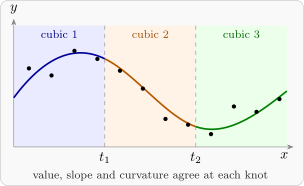

10.3 Piecewise polynomials: splines
A single low-order polynomial may fit some ranges of \(x\) well and others badly, and raising its order brings the problems of Figure 19. An alternative is to divide the range of \(x\) at points \(t_1 < t_2 < \dots < t_h\), called knots, and fit a low-order polynomial on each piece, joined smoothly at the knots. This was done with straight lines in Section 9 (piecewise linear regression). The usual choice is cubic pieces.
A cubic spline with knots \(t_1, \dots , t_h\) is a function that is a cubic polynomial on each interval between consecutive knots (and beyond the end knots), and that is continuous with continuous first and second derivatives everywhere. Joining the pieces this smoothly makes the joins invisible to the eye.
Theorem 10.3.1 (Truncated power basis). A function \(s\) is a cubic spline with knots \(t_1 < \dots < t_h\) if and only if \[ s(x) = \beta _{0} + \beta _{1}x + \beta _{2}x^2 + \beta _{3}x^3 + \sum _{i=1}^h \gamma _i(x - t_i)_+^3 \] for some constants, where \((x - t)_+ = \max (x - t, 0)\). So the cubic splines with \(h\) given knots form a linear model with \(h + 4\) parameters.
Proof. If. \((x - t)_+^3\) is \(0\) for \(x \le t\) and the cubic \((x - t)^3\) for \(x > t\). Its first and second derivatives are \(3(x - t)_+^2\) and \(6(x - t)_+\), which are continuous, with value \(0\) at \(x = t\) from both sides. So each term is a piecewise cubic with two continuous derivatives, and so is the sum.
Only if. Let \(s\) be a cubic spline, and let \(c_0\) be the cubic that equals \(s\) on \(x \le t_1\), and \(c_i\) the cubic that equals \(s\) on \((t_i, t_{i+1}]\) (with \(t_{h+1} = \infty \)). At \(t_i\), \(s\) and its first two derivatives are continuous, so the cubic \(c_i - c_{i-1}\) and its first two derivatives vanish at \(t_i\). Expanded about \(t_i\), a cubic is \(a_0 + a_1(x - t_i) + a_2(x - t_i)^2 + a_3(x - t_i)^3\), and the conditions force \(a_0 = a_1 = a_2 = 0\), so \(c_i - c_{i-1} = \gamma _i(x - t_i)^3\) for some \(\gamma _i\). Then for \(x\) in the \(i\)th interval, \[ s(x) = c_0(x) + \sum _{l=1}^i \gamma _l(x - t_l)^3 = c_0(x) + \sum _{l=1}^h \gamma _l(x - t_l)_+^3 , \] since the terms with \(t_l \ge x\) are zero. This has the stated form, with \(c_0\) supplying the \(\beta \)’s. □
So once the knots are chosen, a spline is fitted by ordinary least squares on the \(h + 4\) columns \(1, x, x^2, x^3, (x - t_1)_+^3, \dots , (x - t_h)_+^3\), and the extra-sum-of-squares test of \(\gamma _1 = \dots = \gamma _h = 0\) asks whether a single cubic would do. The coefficient \(\gamma _i\) is the jump in \(s'''/6\) at \(t_i\) (Problem 10.6.5). Some practical points:
- Use few knots: three to five are usually ample. Put them where the curve is expected to change its behaviour, or, lacking that knowledge, at quantiles of the \(x\) values so that each piece has about the same number of observations.
- If the curve may jump at \(t_i\), add \((x - t_i)_+^0\) (the indicator of \(x > t_i\)); for a jump in slope only, add \((x - t_i)_+\); and so on. The spline then has fewer continuity conditions.
- The truncated power columns are badly conditioned when there are many knots. Software uses an equivalent basis, the B-splines, which spans the same space (so gives the same fit) with much better conditioning.
- When the knot positions themselves must be estimated, the model is non-linear in them.

Questions on this section
Stuck on something here? Ask below and it stays attached to this topic.